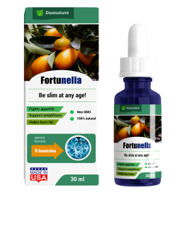

СКИДКА!
Рассказывает высококвалифицированный врач Фабрицио Альварадо Контрерас.
Диеты, упражнения, таблетки и липосакция - основные методы борьбы с лишним весом сегодня, однако, судя по тому, что количество людей с лишним весом продолжает расти, ни один из них не является эффективным. .
Все изменилось, когда появилось натуральное средство для стимуляции похудения капли Fortunella..
Фабрицио Альварадо Контрерас
Директор «Национального научного медицинского центра», доктор медицинских наук, заслуженный работник Испании, терапевт, диетолог.
Стаж работы: 42 года
Что такое капли Fortunella?
Если вашему организму не хватает витамина А, ешьте апельсин, если фосфор, то рыбу, если витамин С, черную смородину. Капли Fortunella содержат микроэлементы, вызывающие сжигание жира в организме человека. Это супер антиоксиданты, которые не только сжигают жир, но и нормализуют работу всего организма.
Fortunella это натуральные капли, они содержат разные экстракты, поэтому скорость сжигания жира увеличивается в 10 раз! Капли Fortunella ускоряют метаболизм, восстанавливают эндокринную систему, стимулируют регенерацию тканей и подавляют чувство голода. Продукт полностью натуральный и является активным стимулятором естественных процессов в организме человека. Поскольку сжигание жировой ткани происходит за счет быстрого метаболизма, строгой диеты не требуется. Для поддержания метаболизма достаточно сбалансированного питания. Интенсивных физических тренировок в этом случае не требуется, достаточно умеренные физические нагрузки.
Из-за повышенной метаболической функции у людей, принимающих Fortunella, может уходить подкожного жира до 300 грамм в сутки! Капли Fortunella эффективны даже в тех случаях, когда причиной лишнего веса являются гормональные нарушения. Если вы склонны к полноте, этот продукт для вас!
В Испании эти капли появилась сравнительно недавно, но уже зарекомендовали себя как одни из любимых продуктов тренеров по бодибилдингу и спортсменов для похудеть быстро и поддержания низкого процента жира в организме.
Результат после 30 дней приема капель Fortunella
Результат после 45 дней приема капель Fortunella
Результат после 63 дней приема капель Fortunella
Коментарии специалистов:

«Самое главное в похудении - не навредить своему организму. К сожалению, большинство популярных способов похудения не могут этим похвастаться. Постоянно соблюдать диету нельзя, и не все ее поддерживают. Не достигнув цели, люди обращаются к таблеткам, подавляющее большинство которых только угнетают организм, вызывая сбой гормонов, иммунной системы и печени. Снижение веса должно быть естественным и не нарушать внутренние процессы в организме. Капли Fortunella это единственное средство, которое выполняет эти задачи. Активные микроэлементы Фортунеллы вызывают ускорение обмена веществ и сжигание жировой массы, а его концентрат в каплях Fortunella улучшает эти процессы как минимум в 10 раз. Я убежден, что это лучшее средство, которое есть на сегодняшний день в современной диетологии. Это также надежный продукт, которому можно полностью доверять ».
«Женщины часто приходят ко мне буквально со слезами на глазах. Они пробуют все, и безуспешно, вес постоянно возвращается. Я им советую успокоиться, восстановиться и начать все сначала. Сегодня есть выход получше и это капли Fortunella . Их можно просто принимать в качестве пищевой добавки и абсолютно естественным образом снизить вес до 9 кг в месяц. Это полностью натуральный продукт, который помогает всем, независимо от пола, возраста и состояния здоровья. Похудение достигается только за счет сжигания жировой массы, а не за счет обезвоживания организма, в проблемных местах эффект становится заметным уже через неделю. Капли Fortunella уже давно используются в диетологии во многих странах, а сейчас набирают популярность в Испании. Лично я советую всем своим пациентам и пока не слышала никаких жалоб ».
Важно! Был сделан вывод, что лучшее время, чтобы начать принимать капли Fortunella . За счет изменения средней температуры и ускорения обмена веществ эффект от использования средства увеличивается, а лишний вес сжигается на 45% быстрее.

Исследования
Результаты лабораторных испытаний Fortunella в Всемирной организации здравоохранения:
Группа людей (100 человек) с избыточным весом в течение одного месяца принимала Fortunella ежедневно в качестве пищевой добавки, не меняя своего обычного рациона. В ходе исследования были получены следующие результаты:
1. Потеря жировой массы от 8 до 9 кг .
- Сбросили вес на
6-7 кг -95%
- Сбросили вес на
5 кг -100%
* Под потерей в данном случае подразумевается избавление от жировой массы в течение 1 месяца.
2. Заметное улучшение обмена веществ.
3. Повышает тонуса и физическая активность.
4. Улучшение работы печени и эндокринной системы.
Было доказано, что Fortunella оказывает сильное влияние на ускорение метаболизма и сжигание жировой массы. Они рекомендованы людям с избыточным весом, людям с нарушенным обменом веществ и сахарным диабетом.
Состав: артишок, кумкват, шпинат, фенхель, корица, куркума, льняное семя, одуванчик, экстракты кориандрового масла, L. карнитин, антиоксидант - токоферол. ВНИМАНИЕ! Остерегайтесь подделок!
Health&Fit,
Sobre fortunella
Privacy policy
General conditions of sale
Legal warning